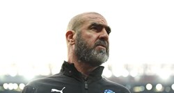
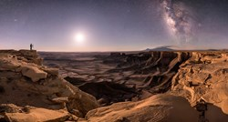

Sklonište za životinje
U skloništu je dom trenutno pronašlo preko tristo pasa, kako štenaca i mladih pasa, tako i odraslih pasa. Svaki od njih ima svoju tužnu priču. Ostavljeni, zlostavljani, izgladnjeli, izbačeni iz automobila prije godišnjeg odmora svojih vlasnika, u očima još uvijek imaju nadu da će pronaći novi dom.Više.
Znanstvenici koktelom lijekova životinjama duplo produljili život
Znanstvenici su uspjeli eksperimentalnim koktelom već postojećih lijekova skoro za dvostruko produljiti životni vijek testiranim životinjama, javlja Science Alert.Više
Salah navijačici poklonio dres, a zauzvrat dobio bombonijeru vrijednu 350 kuna
Mohamed Salah bio je dvostruki strijelac u Liverpoolovoj pobjedi protiv Crvene zvezde (4:0) u Ligi prvaka, a uz to je razveselio jednu sretnicu u publici. Naime, nakon utakmice na Anfieldu, Salah je otrčao prema tribinama i jednoj navijačici poklonio svoj dres.Više
 Cantona: Svaki nogometaš se treba odreći dijela zarade. Neki nemaju ni za loptu
Francuz Eric Cantona u kolumni za The Players' Tribune ukazao je na duboku povezanost ljudi i nogometa. Smatra da svi zaslužuju igrati nogomet i da se bogataši nogometaši zbog toga trebaju odreći dijela svoje zarade. Francuz Eric Cantona u kolumni za The Players' Tribune ukazao je na duboku povezanost ljudi i nogometa. Smatra da svi zaslužuju igrati nogomet i da se bogataši nogometaši zbog toga trebaju odreći dijela svoje zarade.Više
Ljepše fotografije svemira vjerojatno nikada niste vidjeli
AMERIČKI fotograf Brad Goldpaint pobjednik je jednog od najvećih i najprestižnijih natjecanja u astronomskoj fotografiji, Astronomy Photographer of the Year, što ga vodi britanska zvjezdarnica Royal Observatory u Greenwichu.Više
 Sklonište za životinje
Sklonište za životinje

 Znanstvenici koktelom lijekova životinjama duplo produljili život
Znanstvenici koktelom lijekova životinjama duplo produljili život
 Salah navijačici poklonio dres, a zauzvrat dobio bombonijeru vrijednu 350 kuna
Salah navijačici poklonio dres, a zauzvrat dobio bombonijeru vrijednu 350 kuna